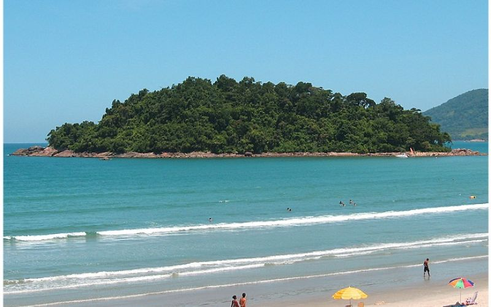
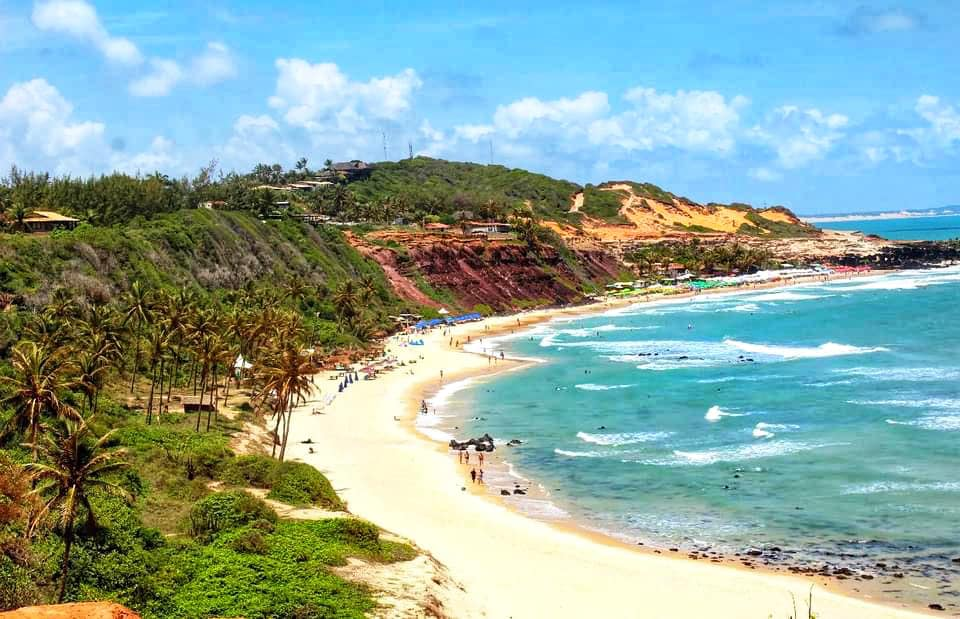
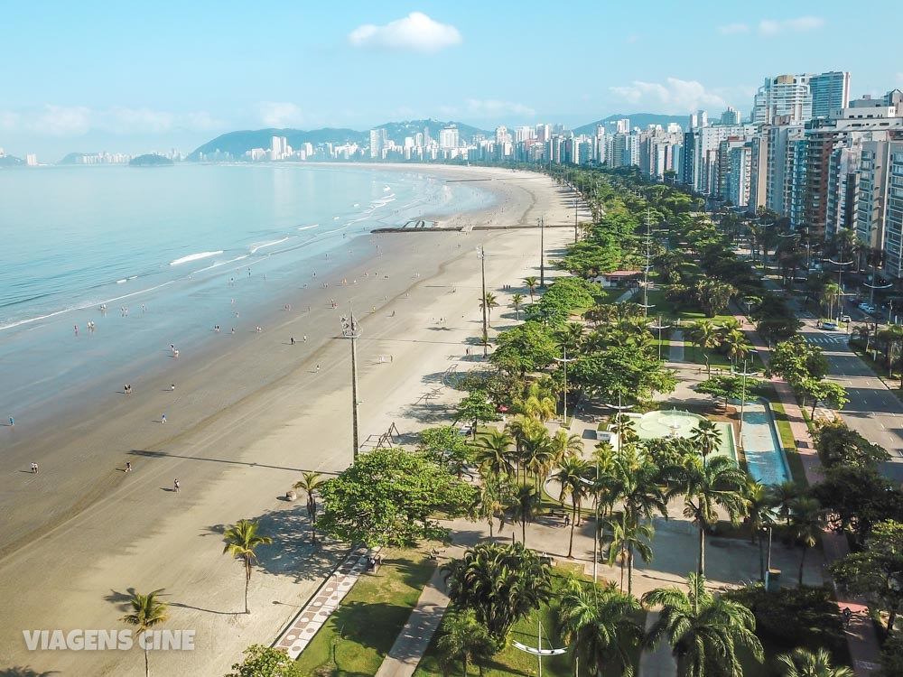

Praias do Brasil
O Brasil é um dos países tropicais conhecidos pelas praias mais bonitas do planetas. Confira as melhores praias para esse verão
Jericoacora

Jericoacoara é uma praia localizada na vila homônima, no município de Jijoca de Jericoacoara, no estado do Ceará, no Brasil. Está localizada a 295 km a oeste da capital do estado, Fortaleza. Foi eleita em 1994 pelo jornal estadunidense The Washington Post uma das dez praias mais bonitas do planeta.Em 2014, foi eleita pelo Huffington Post a quarta melhor praia da Terra.É um dos locais mais frequentados por praticantes de windsurfe no país. A praia é parte integrante do Parque Nacional de Jericoacoara.
Atrações:
- Pedra Furada.
- Duna do Por do sol.
- Igreja Nossa Senhora da Consolação.
- Serrote.
- farol de Jericoacoara.
- Campo das Dunas.
Praia do Lazaro

A Praia do Lázaro é uma praia de Ubatuba, São Paulo, com 1,5 km de extensão e características que agradam a quem procura agito ou sossego. É uma grande piscina cercada de verde e convidativa a passeios de caiaque e stand up. Já a areia é bem firme e compacta, com grande variação de maré. Ótima para andar de bike ou correr na maré baixa. Para quem gosta de fazer passeios, na Praia do Lázaro são oferecidas diversas rotas para conhecer as praias da região.
Atrações:
Praia de Maranduba

A Praia da Maranduba é uma praia localizada no município de Ubatuba, no estado de São Paulo, e é a primeira praia da cidade. A praia é conhecida por ter uma boa infraestrutura e opções de lazer para a família. praia de poucas ondas, mar calmo, raso, sem buracos, mar claro e limpo cor esmeralda. Junto com Sapê e Lagoinha forma 7 kms de faixa de areia, perfeito para caminhadas e corrida.
Atrações:
- Stand Up
- Caiaques
- Tobocean
- Banana Boat
- Parasail
Praia de Pipa

A Praia de (da) Pipa é uma famosa praia localizada no município de Tibau do Sul, ficando a 85 km de Natal, capital do estado do Rio Grande do Norte, Brasil. É o principal balneário do Litoral Sul do estado, que inclui ainda praias como Ponta do Madeiro e Praia do Amor.
Atrações:
- Passeios de lancha, jipe, quadriciclo ou buggy
- Dunas de Cacimbinhas
- Mirante das Tartarugas em Sibaúma
Praia de Santos

Santos, cidade do litoral sul de São Paulo, é conhecida por suas praias, que são um dos principais destinos turísticos do Brasil. A orla santista é composta por 7 km de praia, divididos por sete canais, de ponta a ponta, é possível encontrar praias bem-cuidadas e com paisagens belíssimas, com calçadões e uma ótima infraestrutura, que oferece quiosques, fontes, ciclovias e muito mais.
Atrações:
- Museu Pelé
- Memorial das Conquistas do Santos Futebol Clube
- Aquário Municipal de Santos